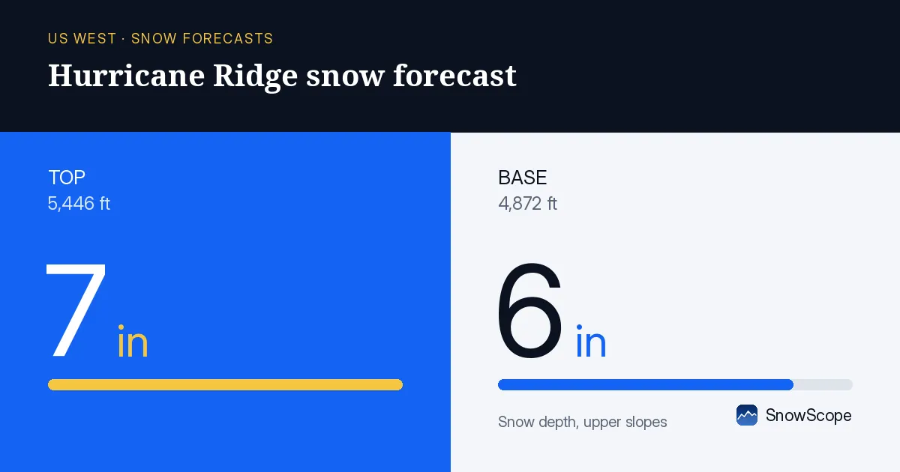
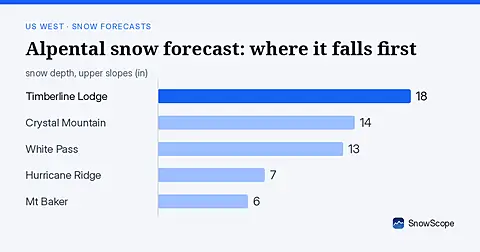

Hurricane Ridge snow forecast: 5–24 in expected by 25 November (US West)
Hurricane Ridge will see rain or wet snow on lower slopes when the freezing level climbs on 24 November, but the upper mountain stays cold enough for powder. The forecast adds up to 24 in (61 cm) near the summit by 25 November, with the heaviest falls on 24 November.
See the live snow forecast for Hurricane Ridge in the SnowScope appSnow depth, powder alerts and the 3D map, free.
What is on the ground right now
Upper slopes at Hurricane Ridge hold 10 in (25 cm) today. At mid-mountain (5,157 ft / 1,572 m) the SnowScope map shows 6 in (16 cm), which is less than the typical 10 in (26 cm) for late November. Among the five resorts tracked here, Mt. Shasta Ski Park leads with 24 in (61 cm) on its upper slopes.
A station at Waterhole, 3.7 miles (5.9 km) away at 5,010 ft (1,527 m), measured 3 in (8 cm) on 20 November with no fresh snow that day. Early season snow is thin; rocks may be under it, especially on lower runs.
| Resort | Snow depth | New snow, 72 h | Coming, next days | Top |
|---|---|---|---|---|
| Hurricane Ridge | 10 in (25 cm) | 2 in (4 cm) | 24 in (61 cm) | 5,446 ft (1,660 m) |
| Mt Baker | 7 in (19 cm) | 1 in (2 cm) | 15 in (38 cm) | 5,105 ft (1,556 m) |
| Stevens Pass | 9 in (23 cm) | 1 in (3 cm) | 9 in (22 cm) | 5,666 ft (1,727 m) |
| Alpental | 4 in (9 cm) | 1 in (2 cm) | 7 in (18 cm) | 5,443 ft (1,659 m) |
| Mt. Shasta Ski Park | 24 in (61 cm) | 3 in (7 cm) | 7 in (17 cm) | 7,539 ft (2,298 m) |

Rain and wet snow risk on 24 November
The freezing level at Hurricane Ridge will reach 5,446 ft (1,660 m) on 24 November—the same height as the summit—and may climb to 6,594 ft (2,010 m). This means rain or wet snow can fall on all slopes, and snow that lands low will not stick or will turn to water.
Below 4,528 ft (1,380 m), expect rain. Between 4,528 ft (1,380 m) and 5,446 ft (1,660 m), precipitation will fall as a mix of rain and snow. Only the top stays dry enough for powder. By 25 November the freezing level drops, so conditions improve higher on the mountain.
When the snow arrives, day by day
Sunday 22 November: 2 in (4 cm) has already fallen. Monday 23 November: 6 in (16 cm) is forecast. Tuesday 24 November: the main event brings 11 in (29 cm). Wednesday 25 November: another 6 in (16 cm) completes the event.
Height matters. At the base (4,872 ft / 1,485 m), look for 6 in (15 cm) on the ground and 14 in (36 cm) in the next week. At the top (5,446 ft / 1,660 m), 7 in (18 cm) lies there now, with 22 in (56 cm) more expected over the next seven days. The upper reaches store much more snow because they stay cold.
How this season compares with the past
At 5,157 ft (1,572 m), Hurricane Ridge has less than half the normal snow for this date. Today's 4 in (11 cm) is deeper than only 14 of the 46 past winters on 22 November. A slow start is typical; the best snow here usually arrives in early March or early April, so there is time to build.
Across the US West, 434,145 sq mi (1,124,430 km²) is now snow-covered, up from 406,318 sq mi (1,052,360 km²) on 20 November. The forecast shows 357,890 sq mi (926,930 km²) by 25 November as lower elevations receive rain instead of snow.
Where to ski for the best snow
Ride the upper lifts to stay above the rain line and find the driest powder. On 24 November, when the freezing level is high, the summit zone is your target. Lower terrain will be slushy or icy by mid-morning after a warm rain has fallen.
Runs with north-facing slopes or shade will hold snow longer. By 25 November the air cools again, so conditions stabilize. The forecast can change two to three days out; check the SnowScope map again 48 hours before you travel.
Mt Baker and Stevens Pass also see snow
Mt Baker has 8 in (19 cm) on its upper slopes and is forecast to gain 15 in (38 cm) by 25 November. Stevens Pass holds 9 in (23 cm) and will gain 9 in (22 cm). Mt. Shasta Ski Park, the deepest pack in this group at 24 in (61 cm), is forecast 1 in (17 cm) more by 25 November.
Each resort sits at different elevations and angles to the incoming weather, so conditions differ. Use the SnowScope map to compare them before you decide where to go.
Tips for skiers
- On 24 November, when the freezing level is high, start early and head to the highest lifts and terrain to find cold, dry snow. Lower slopes will turn slushy.
- Rain on existing snow speeds melt and can trigger loose snow slides; before you venture off-piste, read the official avalanche bulletin for your area.
- Early-season snow is often thin. Watch for rocks and exposed patches, especially on lower runs and south-facing slopes.
- Forecasts three days ahead can shift, particularly the freezing level. Check the SnowScope map again on 23 November to confirm Tuesday's rain risk.
- Get a powder alert in the SnowScope app to know when Hurricane Ridge gets its next fresh snow.
About these numbers
Resort snow depths are the deepest snow on the resort's upper slopes on the date shown; they are estimates for an area, not a measurement at one point. Forecasts can change. Always read the official avalanche bulletin before going off-piste.
Official avalanche bulletins: avalanche.org
Cite this report
For research, teaching or the press: the numbers and charts are free to reuse under CC BY 4.0 with this citation.
SnowScope (2026), Hurricane Ridge snow forecast: 5–24 in expected by 25 November (US West), https://snowscope.app/blog/en/2026/11/us-west-hurricane-ridge-snow-forecast-22-november-2026.html, accessed 2026-11-22
SnowScope (Atlas Labs). (2026, November 22). Hurricane Ridge snow forecast: 5–24 in expected by 25 November (US West). SnowScope snow reports. https://snowscope.app/blog/en/2026/11/us-west-hurricane-ridge-snow-forecast-22-november-2026.html
BibTeX
@misc{snowscope2026uswesthurricaneridgesnow,
author = {{SnowScope (Atlas Labs)}},
title = {Hurricane Ridge snow forecast: 5–24 in expected by 25 November (US West)},
year = {2026},
month = nov,
howpublished = {\url{https://snowscope.app/blog/en/2026/11/us-west-hurricane-ridge-snow-forecast-22-november-2026.html}},
note = {Published 2026-11-23 00:50 UTC; accessed 2026-11-22}
}· CC BY 4.0 · Methods, data and tools →
Hurricane Ridge: snow and temperature by height, this winter vs last (tools) →
Follow Hurricane Ridge
Free: a message when fresh snow is coming, and the forecast every morning.
More snow reports

The forecast shows up to 199 cm across the US West in the next two weeks, with the heaviest snow arriving in week one. Data from 21 November 2026.

Mt Baker, Washington: about 133 in (337 cm) at the usual peak at mid-mountain in 46 past winters, a world snowfall record, no lodging on the hill, and what that means.

Mt Baker sits at 28 cm on upper slopes, right where November typically sees snow at this height. Fresh powder is arriving this week, especially Thursday.